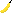

Jimage is a small library that reads image data and converts it to JSON. The Jimage can then later be drawn in a canvas element.
As an example this image  will be used to draw a few scaled up versions of it. First a Jimage is created from the image:
banana = new Jimage('banana.png');
The created Jimage can now be used to draw the Jimage when it is loaded. If a canvas element is specified that element will be used to draw the image, otherwise an element will be created:
banana.element.addEventListener('loaded', function() {
banana.draw({element: 'to-scale'});
banana.draw({element: 'x3', scale: 3});
}, false);
It is also possible to export the Jimage for later use:
exportedBanana = banana.export();
newBanana = new Jimage(exportedBanana, {element: 'x10', scale: 10});
The Jimage can be drawn either as is, inverted or with a passed function that modifies each pixels RGBA values:
newBanana.draw({mode: 'inverted'});
newBanana.draw({element: 'tomatoBanana', scale: 15, mode: function(pixel) {
return {
r: pixel.r,
g: 100 - pixel.g,
b: pixel.b,
a: pixel.a,
};
}});